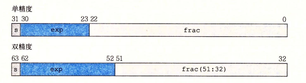

信息储存
进制
日常生活中，我们习惯使用十进制，但是计算机领域使用最多的当属十六进制，并不是说计算机能读懂十六进制，计算机只能都懂二进制，但是十六进制和二进制的转换很方便，所以人们通常把计算机中的二进制数据转换为十六进制
字和字节
计算机能处理的最小数据单位就是字节，字一般是二字节或者四字节，这个在不同的机器上不同，每台计算机都有自己的字长，实际上字长就是该机器指针的长度，也就是地址的长度，字长越大的机器，寻址能力也就越强
字节顺序
分为小端和大端，最近也出现了双端的字节序，但是最常见的还是小端，小端的含义就是，数据的存储按原始数据的高位存储在内存的高地址，原始数据的低位存放在内存的低位，通俗的说法是，你会发现内存中的数据是反过来存放的
大端和小端都有各自的优点，具体使用那一种字节序只是习惯问题
字符串
C语言中字符串以0结尾，定义字符串时，C的编译器会默认在字符串的结尾加上一个0，否则可能会发生意想不到的错误
常见的字符集有ascii和unicode两种，ascii使用16为，也就是两个字节来表示字符，而unicode使用32为，也就是四个字节来表示字符
ascii对英文字母有较好的支持，而unicode支持的范围更加广泛
bool运算
狭义的bool代数就是0和1的运算，C语言规定了按位与、按位或、取反、异或四种bool运算
按位与：参与运算的两位都是1结果才为1，否则为0
按位或：参与运算的两位都是0结果才为0，否则为1
取反：1取反为0，0取反为1
异或：参与运算的两位只有一位为1结果才为1，否则为0
这四种运算都有一定的特性，如可以让一个数按位与0xFF将其高位全部置0，或者让一个数按位或0xFF使其低16为全部置1
异或的特性包括：一个数异或自己得零，一个数异或0得自己，一个数异或另外一个数偶数次，结果还是这个数
逻辑运算
C语言规定了逻辑与（&&），逻辑或（||），和逻辑非（！）
在逻辑运算看来，非0的所有数都是1，1&&1 = 1，1&&0 = 0，0&&0 = 0
1||1 = 1，1||0 = 1， 0||0 = 0，！1 = 0， ！0 = 1
移位运算
C语言中有左移，逻辑右移和算数右移
逻辑右移在左边置0，算术右移在左边置符号位
整数表示
在C语言中，整数分为有符号数和无符号数，C语言的整数默认使用补码表示的，无符号数的所有位都是数值位，有符号数的最高位表示符号位，0为负数，1为整数，负数的补码是该书绝对值的补码取反再加一
编程时，应当尽量避免无符号的使用，由于存在隐式的转换，使用无符号数在某些时候可能导致难以察觉的错误
整数运算
大寄
我其实也是迷迷糊糊看过去的，就记住一个吧，C语言中整数的运算时会溢出的
还有就是整数的乘法和除法有的情况可以采用移位来进行优化
浮点数
就简单看了一下浮点数的表示，浮点数由三部分所组成：最高位是符号位，中间的exp是阶码，代表2的多少次幂，最后一部分是尾数
浮点数的表示形式就是（-1）**s * 尾数*2**阶码

注意：浮点数不能准确地表示所有小数
小结
第二章就这些，了解了整数和浮点数的表示，在内存中的存储方式以及使用的时候应该注意些什么
寄，牵扯到数学运算我就寄，太菜了